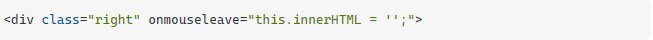

oke jadi di sini masalahnya.
ok jadi ini semua berfungsi dengan baik, elemen
menyembunyikan dirinya sendiri ketika saya menggerakkan mouse dari div kanan ke kiri.
Masalahnya adalah itu juga bersembunyi ketika saya bergerak di antara berbagai div di
dalamnya. Saya perlu membuat pengguna menavigasi di sekitar div kanan, lalu
menghilangkannya ketika menggerakkan mouse ke div kiri.
Masalah lain adalah saya tidak dapat menggunakan jquery pada proyek ini, harus dilakukan
dalam vanilla js murni. Apakah benar-benar tidak ada cara bagi DOM untuk menangani acara
semacam ini?
Anda ingin menggunakan onmouseleavetidakonmouseout Mouse Out memicu untuk setiap anak secara terpisah, mouse pergi ketika meninggalkan elemen set.
Seperti yang telah ditunjukkan orang lain, acara yang benar untuk digunakan adalah mouseleavekarena, seperti yang dinyatakan oleh dokumentasi: mouseleave dan mouseout serupa tetapi berbeda karena mouseleave tidak menggelembung dan mouseout tidak. Ini berarti mouseleave dipecat ketika pointer telah keluar dari elemen dan semua turunannya, sedangkan mouseout dipecat ketika pointer meninggalkan elemen atau meninggalkan salah satu keturunan elemen (bahkan jika pointer masih di dalam elemen). Selain itu, Anda tidak boleh menggunakan atribut acara HTML sebaris untuk menyiapkan acara Anda . Sebagai gantinya, ikuti standar modern dan pisahkan kode penanganan acara Anda dari HTML Anda. Dan, untuk menyembunyikan elemen, Anda tidak boleh menghapus kontennya. Sebagai gantinya, sembunyikan elemen secara harfiah, yang dapat dilakukan melalui CSS dengan display:none, visibility:hidden, atau opacity:0.

Anda dapat mencapai ini dalam Javascript dengan mouseleaveacara tersebut. Sebagai pendengar
acara sebaris, itu akan menjadi:

Contoh kerja:
Tetapi lebih baik memisahkan JavaScript dan HTML. Jadi itu dalam JavaScript:
Contoh kerja: